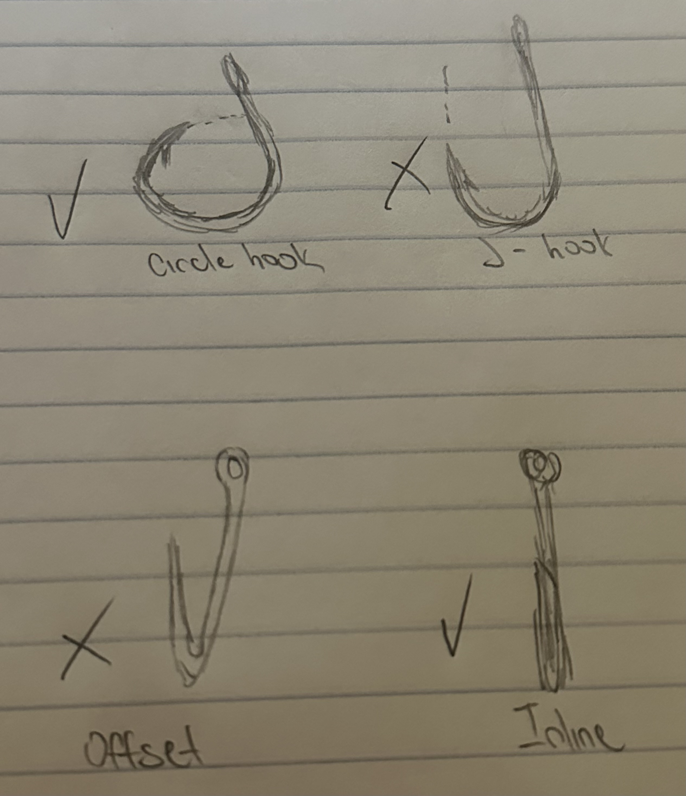

| Home | Regulations |
|---|
| SPECIES | OPEN SEASON | SIZE LIMIT | POSSESSION LIMIT |
|---|---|---|---|
| Striped Bass | Year round | 28" to less than 31" | 1 fish |
For all recreational anglers, it is a requirement to use inline circle hook when fishing for striped bass. This means that other hooks such as a J-hook or even offset circle hooks isn't allowed. However, this rule only applies when an angler is using whole or cut natural bait. The only exeception to the requirement is when utilizing artificial lure to catch striped bass.
The main reason for requiring inline circle hook when targeting striped bass is there have been plenty of striped bass being released dead due to being gut hooked. As a result, inline circle hook is required since it will likely hook the corner jaw of the fish rather than it guts.
If you happened to gut-hook a striped bass while using an inline circle hook. Cut the leader of your fishing line as close to the hook as possible and leave the hook in the fish. The hook will eventually rust out and the fish will likely live.